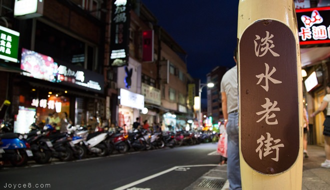

景點介紹

從淡水捷運站走出來右轉，中正路及延伸的重建街、清水街一帶，就是鼎鼎大名的淡水老街。「淡水老街」不僅早已是全台知名熱門景點，同時也吸引不少外國人慕名而來。這裡街道兩旁林立熱鬧商店，有濃濃古早味的餅舖、雜貨店，也有賣潮流服飾、玩具。
來到淡水必吃的美食阿給，是從日文油豆腐的部分發音直譯而來，作法是將油豆腐中間挖空，填加炒過的冬粉然後浸泡滷汁，再用魚漿封口加以蒸煮，最後淋上甜辣醬或是店家獨門的秘密醬料。特色小吃如：魚丸、阿婆鐵蛋、魚酥等等，還有許多古蹟可參觀，怎麼玩都不會膩。
淡水老街分成內外兩側，外側是靠淡水河岸的金色水岸步道，內側是的傳統老街，這裡街道兩旁林立熱鬧商店，有濃濃古早味的餅舖、雜貨店，也有賣潮流服飾與玩具。傍晚時，在金色水岸步道還可欣賞夕陽落入海面的美景。
位於山坡上的重建街由於發展較早，因此兩旁仍有許多木造與磚造的老房舍，走到街底還能從高處遠眺淡水河口。後來因商業發展關係，形成另一條與重建街平行的街道，主要是以米店、碾米業為主，因此稱「米市仔」(現在清水街的北段)，直到清水祖師廟興建後，米市街才改名清水街。
沿著中正路老街往前行，可看見對淡水影響很深的馬偕博士之馬偕石像公園，沿途還有清水祖師廟、福佑宮、滬尾偕醫館、淡水禮拜堂等古蹟。在老街除了尋幽訪勝，老街內的特色商店更是逛街及享受美食的好地方。